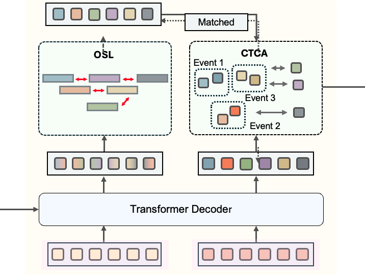

About Me
I am a undergraduate student at Sejong University.
My primary research interest lies in the integration of visual and textual modalities to achieve a more comprehensive understanding of multimodal representations.

Research Interests
- Dense Video Captioning: the task of detecting multiple temporal events in a video and generating natural language descriptions for each event.
- Video Temporal Grounding: identifying the precise start and end times of a query event in an untrimmed video.
- Multi-modal: research field that focuses on integrating and understanding information from multiple modalities such as vision, language, and audio.
Experience
Research Assistant, Multimodal AI Lab, Sejong University
Seoul, South Korea
Advisor: Jae Won Cho
Feb. 2025 ~ present
Education
Sejong University
B.S in Dpt. of Artificial Intelligence
Seoul, South Korea
Mar. 2023 ~ present
News
- [2026.2.20] 1 paper accepted at CVPR 2026
Publications
